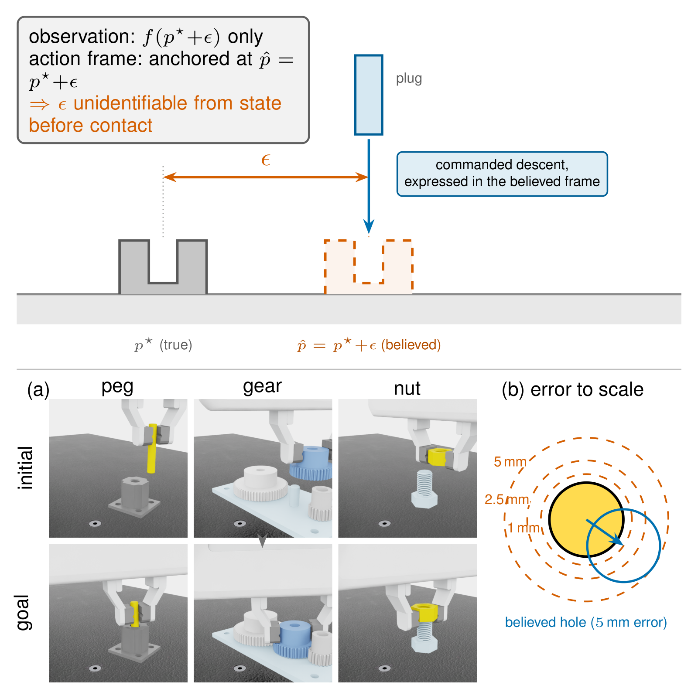
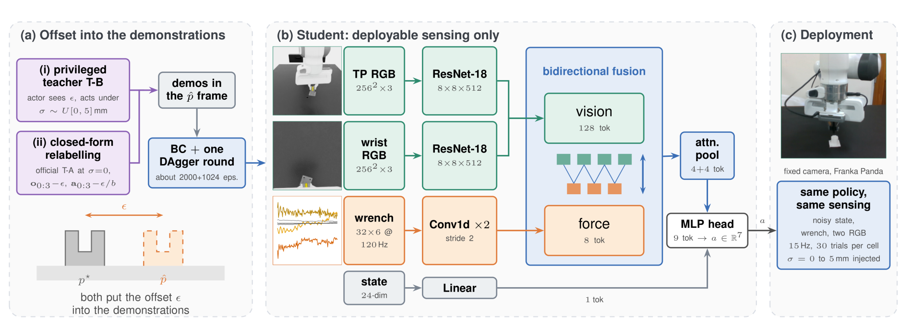
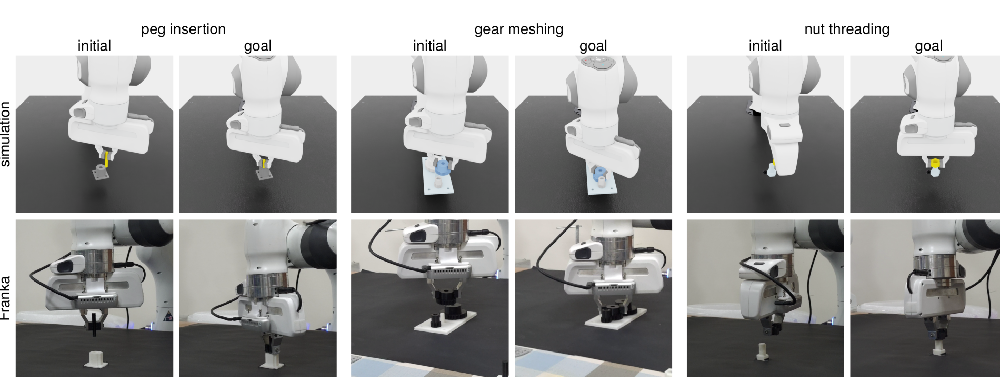

Supplementary video
Simulation and hardware, 2 min 50 s. No audio.
Abstract
Pose error in precision assembly can corrupt not only what a robot observes but also the coordinate frame in which it acts. On the FORGE benchmark, the official state-based policy succeeds in 97% to 99% of episodes with the true pose but only 32% to 60% at the benchmark's σ = 5 mm pose-noise setting. The same estimated pose enters the observation and anchors the action frame, making the offset unidentifiable from proprioceptive state alone before contact. We supply this missing information during training in two ways. A privileged teacher observes the offset in simulation, while clean demonstrations can instead be relabelled into the displaced frame in closed form. The deployed student is trained with behaviour cloning followed by one DAgger round and receives only noisy state, a raw wrench window, and two RGB cameras at test time. On the unmodified FORGE tasks, the teacher-route student maintains 92% to 99% success across σ = 0 to 5 mm, while six non-privileged baselines fall to 2% to 80%. A matched behaviour-cloning experiment isolates the source of this robustness. With the same student architecture, data budget, and training procedure, demonstrations generated without offset access yield only 31.5% success at σ = 5 mm, whereas privileged and relabelled demonstrations reach 88.7% and 95.8%. Deployed zero-shot on a Franka, the student reaches 83.3% pooled success at σ = 5 mm against 34.4% for the strongest state-based policy. Deployable sensing alone is insufficient. Robustness requires supervision that encodes compensation for the latent frame offset.
The displaced action frame
Why a pose estimate that is 5 mm off is worse than it sounds.
The estimated fixture pose does two jobs at once. It enters the observation, and it anchors the frame the actions are expressed in. A policy that sees only proprioceptive state therefore cannot identify the offset before contact: every signal it has is already expressed in the displaced frame, so nothing in its own state reveals that the frame has moved. The peg's hole leaves 0.114 mm of clearance, and at σ = 5 mm the believed hole barely overlaps the real one.

Method
Put the offset into the training signal, then take it away at test time.
Two routes to the same supervision
- A privileged teacher observes ε in simulation and acts through it.
- Or clean demonstrations are relabelled into the displaced frame in closed form.
Either route leaves the compensation present in the training data.
What the deployed student gets
- Noisy state, no access to ε
- A raw wrench window
- Two RGB cameras, fused into one action at 15 Hz
Behaviour cloning followed by one DAgger round. No privileged input at test time.

Results
Three unmodified FORGE tasks in simulation, then zero-shot on hardware.
| Task | Policy | 0 mm | 1 mm | 2.5 mm | 5 mm |
|---|---|---|---|---|---|
| peg | T-A official baseline | 98.7 / 98.2 | 97.3 / 94.7 | 73.7 / 74.5 | 31.8 / 33.3 |
| T-A+ noise-augmented | 84.1 / 77.3 | 78.0 / 75.1 | 58.7 / 56.2 | 29.9 / 25.8 | |
| T-B privileged (oracle) | 99.3 / 96.6 | 99.3 / 96.7 | 99.7 / 97.5 | 99.3 / 96.6 | |
| student (ours) | 98.3 / 96.2 | 98.6 / 96.2 | 98.3 / 95.4 | 96.6 / 91.8 | |
| gear | T-A official baseline | 98.6 / 100.0 | 97.5 / 99.2 | 86.9 / 90.6 | 49.9 / 53.8 |
| T-A+ noise-augmented | 94.9 / 99.7 | 94.7 / 99.7 | 92.1 / 99.3 | 77.9 / 90.0 | |
| T-B privileged (oracle) | 98.7 / 99.7 | 99.0 / 100.0 | 98.2 / 99.7 | 98.2 / 98.8 | |
| student (ours) | 98.8 / 98.4 | 99.2 / 97.8 | 99.3 / 96.5 | 98.2 / 96.5 | |
| nut | T-A official baseline | 97.4 / 97.8 | 96.1 / 96.9 | 87.4 / 87.9 | 60.4 / 64.3 |
| T-A+ noise-augmented | 89.7 / 88.4 | 88.8 / 88.3 | 83.7 / 85.2 | 73.0 / 71.2 | |
| T-B privileged (oracle) | 99.2 / 99.7 | 99.5 / 99.9 | 99.9 / 99.6 | 99.2 / 99.9 | |
| student (ours) | 99.1 / 98.8 | 99.0 / 98.8 | 99.0 / 98.6 | 96.5 / 95.1 |
At 5 mm the improvement over the official baseline reaches +64.8 points on peg, +48.3 on gear and +36.1 on nut. Measured as the fraction of baseline failures eliminated, the student removes 91.1% to 96.4% of them. The recovered oracle gap is 96.0% on peg, 100% on gear and 93.0% on nut.
| Task | Policy | 0 mm | 1 mm | 2.5 mm | 5 mm |
|---|---|---|---|---|---|
| peg | T-A+ | 86.7 | 83.3 | 63.3 | 20.0 |
| student (ours) | 90.0 | 93.3 | 86.7 | 80.0 | |
| gear | T-A+ | 90.0 | 90.0 | 73.3 | 36.7 |
| student (ours) | 93.3 | 90.0 | 83.3 | 86.7 | |
| nut | T-A+ | 90.0 | 83.3 | 70.0 | 46.7 |
| student (ours) | 93.3 | 90.0 | 86.7 | 83.3 | |
| pooled | T-A+ | 88.9 | 85.6 | 68.9 | 34.4 |
| student (ours) | 92.2 | 91.1 | 85.6 | 83.3 |
The margin grows with pose error: 17 points at 2.5 mm (Fisher's exact test, p = 0.012) and 49 points at 5 mm (Wilson 95% intervals [74, 90] versus [25, 45], p < 10−10), with the largest task-level gap on peg, 80.0% against 20.0%.

Try it yourself
Pick a task, a noise level and a policy. Every clip is a recorded rollout.
Where the robustness comes from
A matched behaviour-cloning experiment, same architecture and data budget.
All three share the student's architecture, data budget and training procedure, and all three are evaluated at σ = 5 mm. The only difference is whether the demonstrations encode compensation for the offset. Adding cameras and force to a policy is not what produces the robustness. The supervision is.
What this does not solve
- Unseen geometries. On 70 AutoMate plug and socket pairs in the unmodified peg environment, at 2.5 mm of pose error the student succeeds in 4.6% of trials against 18.4% for the noise-augmented state baseline. Robustness to pose error does not imply cross-geometry generalisation.
- Scene composition. On peg, replacing the dark work surface with a light one takes hardware success from 93% to 25%. Photometric augmentation narrows the appearance gap, it does not close it.
- Camera calibration. Increasing camera extrinsic error from 5 mm and 1 degree to 10 mm and 2 degrees roughly halves gear success.
- Sample size. The main results are simulated. The hardware sweep is 30 trials per cell, and several cells elsewhere are single-seed, marked as such in the paper.
BibTeX
Anonymous entry while the paper is under review. Update on acceptance.
@misc{anonymous_displaced_frame,
title = {Seeing Through the Displaced Frame: Privileged Noise
Distillation for Vision-Force Precision Assembly},
author = {Anonymous},
note = {Under review}
}